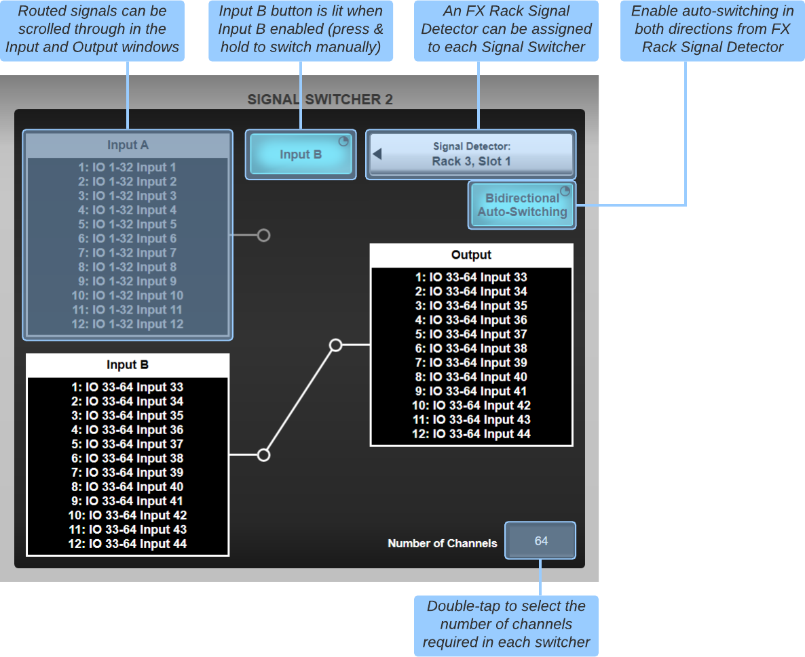

Signal Switcher
Four sets of multichannel A/B input switchers are provided to allow rapid switching between two sets of inputs, accessed from a dedicated page in the Tools menu (Menu > Tools > Signal Switcher). Routing to and from the Signal Switchers is achieved through the XY Routing page (select Path > Signal Switcher in the Source or Destination area). Each signal switcher supports 1 to 64 channels of audio. It is ideally suited for switching between main and backup playback machines, however switchers can be freely routed so can be applied to many different applications.
The switches can be triggered manually from the GUI, via the Event Manager (e.g. triggered from GPIs, path mutes, DAW Control functions etc.) or assigned to User Keys. The currently active set of inputs is indicated by the switch graphic in the Signal Switcher interface.

Additionally, the Signal Detector in the FX Rack can provide automatic switching when a reference signal falls below a particular level. If the Bidirectional Auto-Switching button is disengaged, the auto detect switch is swap to B only, and happens when the signal falls below the set threshold. Once the switch to B inputs has been triggered, the user must manually switch back to input A if required. This prevents the switcher toggling backwards and forwards if the control signal is continually crossing the set threshold (e.g. because of an intermittent connection).
If the Bidirectional Auto-Switching button is engaged, the Signal Switcher will switch back to the A inputs when the control signal exceeds the Signal Detector's Threshold point. Use this mode if the control signal stops when playback stops to prevent the switcher from switching to and remaining on input B. The Signal Detector features glitch detection when Bidirectional Auto-Switching is engaged, to prevent the Signal Switcher flip-flopping between A and B inputs if an intermittent control signal is detected.
It is advised that a dedicated control signal is provided from the primary audio source to manage this switching, rather than relying on program tracks having continuous audio content.
Note: The Signal Switcher is not for use with Mic inputs that require control from input channels. Control data will NOT be passed across the switcher.